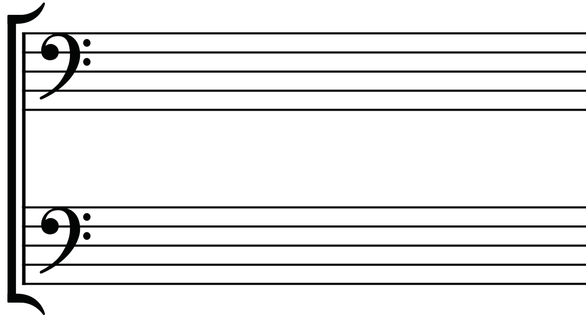
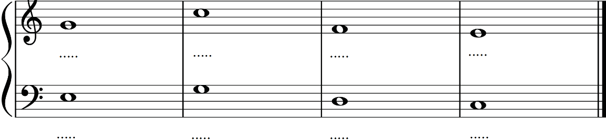

Figure 2.13: The grand staff containing two bass clefs
Activity 2.2
Find a piece of music written on the grand staff where both staffs use the same clef.
Carefully look at the notes on each staff.
Then, answer the following questions:
-
(a) How many independent voices are used in the piece?
-
(b) Which clef is used in both staffs?
-
(c) Which voice is written on the upper staff and which on the lower staff?
-
(d) Why do you think the composer used the particular clef on both staffs?
Exercise 2.2
1.
Answer the following questions.
-
(i) A musician is confused about the difference between a single staff and the grand staff.How would you explain the difference simply and clearly to help the musician understand?
-
(ii) How would you help young musicians to understand why pianists use both the treble and bass staffs on the grand staff?
-
(iii) You are rehearsing with a choir and the music score shows two treble clefs on the grand staff.A fellow singer is confused and thinks it is a mistake.How would you explain why two treble clefs might appear on the grand staff?
2.
Fill in the blanks (dotted lines) with letter names of notes in the grand staff.
(i)
